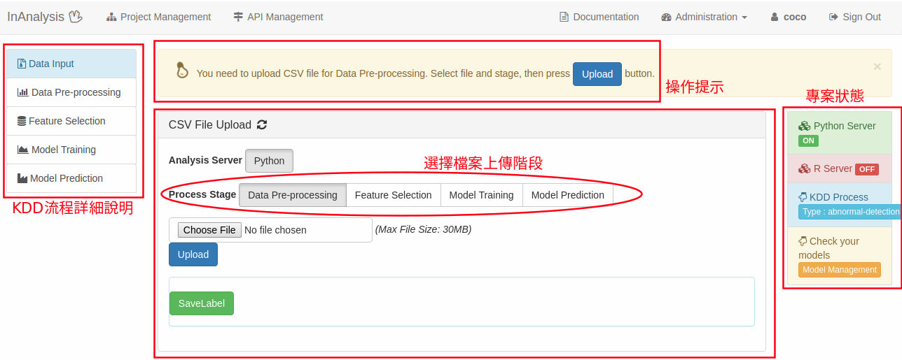
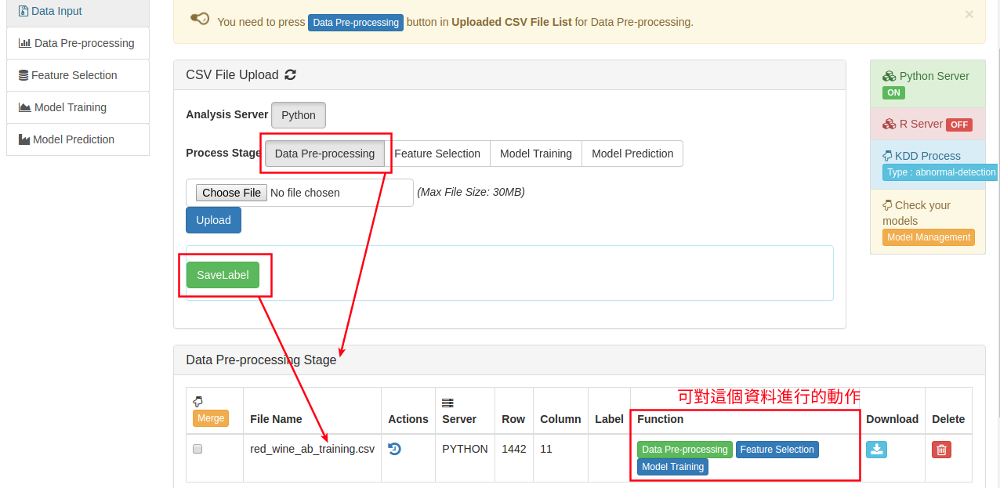
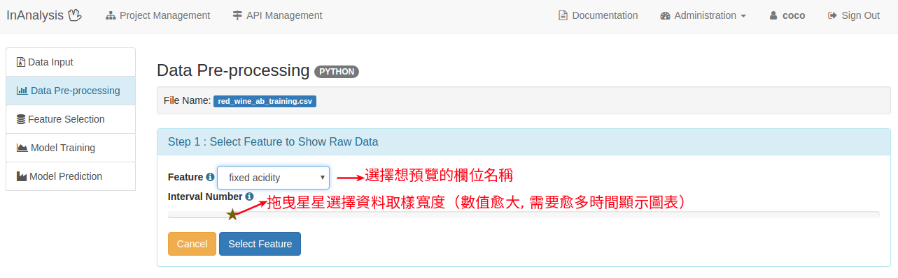
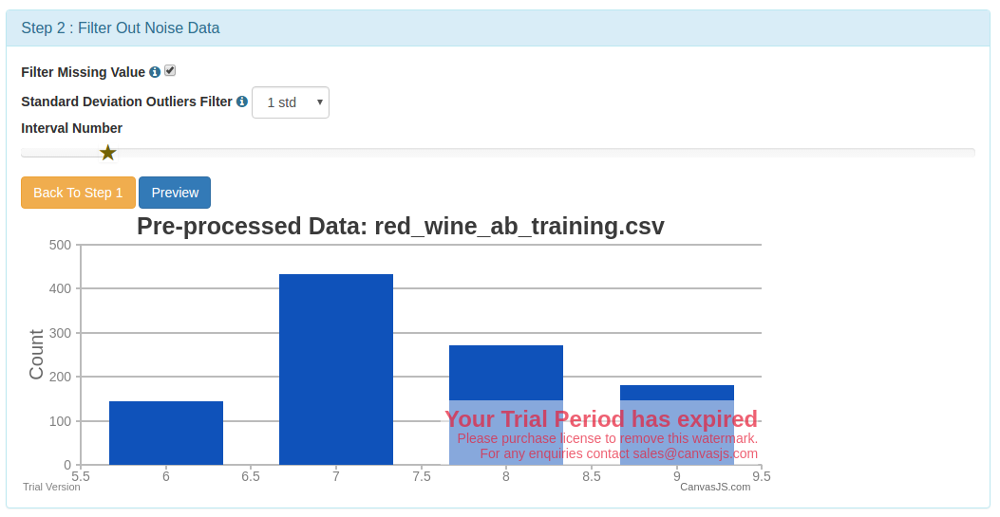
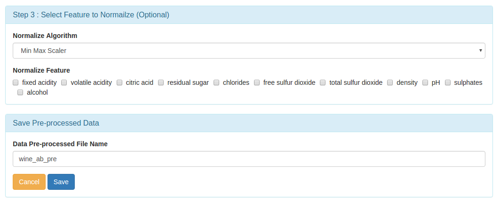

有三大類異常檢測演算法。 在假設資料集中大多數例項都是正常的前提下，無監督異常檢測方法能通過尋找與其他資料最不符合的例項來檢測出未標記測試資料的異常。 監督式異常檢測方法需要一個已經被標記「正常」與「異常」的資料集，並涉及到訓練分類器 （與許多其他的統計分類問題的關鍵區別是異常檢測的內在不均衡性）。 半監督式異常檢測方法根據一個給定的正常訓練資料集建立一個表示正常行為的模型，然後檢測由學習模型生成的測試例項的可能性。
範例問題為：藉由紅酒資料（UCI Data Set）
，判斷品質是否異常。
紅酒資料欄位說明：
1 - fixed acidity
2 - volatile acidity
3 - citric acid
4 - residual sugar
5 - chlorides
6 - free sulfur dioxide
7 - total sulfur dioxide
8 - density
9 - pH
10 - sulphates
11 - alcohol
訓練資料為：正常品質的紅酒資料（quality介於4到7之間）
測試資料為：將quality介於4到7之間的紅酒資料標示為 1 （正常），其他則標示為 -1（異常）
模型訓練流程
上傳訓練資料
 Data Upload  Data Upload從Function欄位中, 選擇Data Pre-processing按鈕, 可進行資料預處理(Pre-process)
 Step1: Data Pre-view  Step2: Filter Out Noise Data  Step3: Select Feature to Normailze (Optional) & Save Pre-processed Data